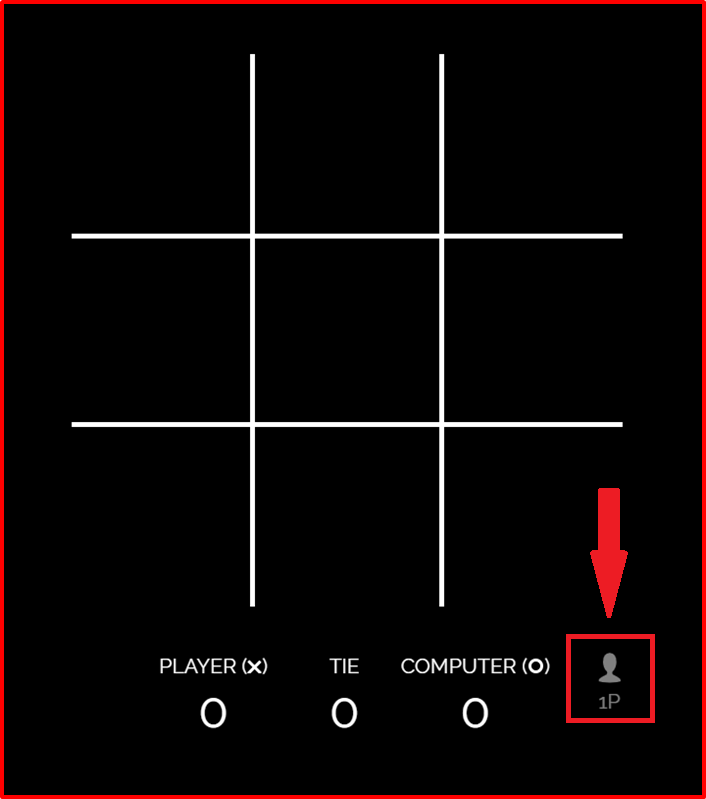
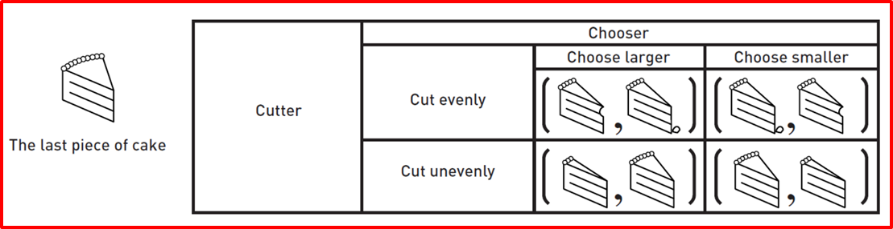

Intro to Game Theory
Grey overlay
Pink
Green
Blue
Cream
Liliac
Purple
Yellow
Objectives
Developing Information Technology, Programming and Development and Literacy learning strands, specifically:
- Researching information and collecting and presenting data.
- Investigate the background and context of a specific information technology.
- Explains and justifies how the use of technology impacts on society, from the perspective of social, economical, political, legal, ethical and moral issues.
Intro to Game Theory
Try It
- Work with the person next to you on one of your computers.
- Go to this site and click the 1P button in the bottom right to switch to 2 players mode. Make sure to switch turns each time you play.

- Play 5 games and see if there’s a certain strategy that both you and your opponent seem to keep on using.
- Open a Word document and write a few sentences on what strategy you ended up using and why you used it. Did this strategy let you win every time or not?
Learn It
- Game theory is used by computer scientists, mathematicians and economists to try and see how rational humans would behave in certain scenarios.
- In the games you are going to learn about, try and remember that humans are not always rational and so when you play these games with your class the results may not be what you expect or what the theory tells you should happen.
- One of the most interesting conclusions reached in game theory is that rational actions by both players can result in situations in which both players are worse off. Weird right?
Research It

- (Picture courtesy of Wikipedia)
- Games have appeared throughout history, and in many different cultures, as a form of entertainment and education. It was not until the mid-1920s that the field of game theory was properly founded by the multi-talented Hungarian mathematician and physicist, John von Neumann.
Badge It - Silver
Learning Strand: Literacy
- Research more about von Neumann, what else did he discover and get involved with during his very eventful life? Write a paragraph of your findings in your word document.
Learn It - Zero-sum games
- Zero-sum games are games in which one player's loss is exactly equal to another player's gain. If you win a hand at poker, your winnings will add up to the sum of your opponents' losses. At the end of the day, poker players (as a group) are no wealthier or poorer than when they started.
- Not all situations in life, or game theory, are zero-sum situations, however. In an arms race, nations compete to build the most destructive weapons possible. This is a situation in which there are many outcomes that leave all "players" worse off than when they started. If they invest heavily in weapons, but then never use them, they have squandered a good deal of their resources and are poorer for it. Also, if the nations use their weapons and go to war, there is much squandering of resources and life, and all are worse off than before.
- We'll cover these situations next lesson.
Badge It - Gold
Learning Strand: Information Technology
- Find three more examples of zero-sum games and explain why they are zero-sum. Write this in your word file.
Learn It
- Cake division is a very simple zero-sum game, modelled with a 2 x 2 payoff matrix.
- A matrix is an array of numbers, symbols or expressions arranged in rows and columns.
- If each player is greedy, we assume that each will choose the strategy with the best worst-case scenario. That means the best bad thing we can do.
- Balance is reached when both players have no reason or incentive to change their strategy, this means they have the “best” strategy available.
- Two children at a party want the last bit of cake, if one child gets it, the other will be annoyed. This problem can be avoided by letting one child cut the cake and letting the other have first choice of the pieces.
- In this game, the cake cutter has two choices, cut evenly or cut unevenly. The chooser can only choose the piece they think is larger or the one that seems smaller.

- For example, if the cutter chooses to cut evenly and the chooser chooses the larger piece, then the cutter will get “half minus a crumb” and the chooser will get “half plus a crumb,”
- Cutting the cake unevenly creates the possibility of getting the larger piece, but the chooser will then nab the bigger piece.
- If the cutter chooses to cut evenly, however, their maximum payoff is about half of the cake, and their minimum payoff is also about half of the cake. So, of the cutter’s two choices, the one that has the least downside is the one they should choose. Consequently, in this situation, they should choose to cut the piece of cake evenly.
- The chooser seeks to do the same thing, make the choice that maximizes her benefit. In this case, if the cutter cuts evenly, the chooser’s best option is to pick the “half plus a crumb.” Notice that even though both children implement their best strategy, one still comes out slightly advantaged over the other. ”Games do not have to be fair”
- This is a zero sum game because whatever cake one person doesn’t get, the other does get.
Badge It - Platinum
- To get your Platinum badge for this week you need to create your own version of a zero-sum game. Use the Cake division game as an example and create a new scenario to base it off.
- Create your own payoff matrix too using the table tools in Word.
- It can use any decision that leads to a zero-sum outcome.